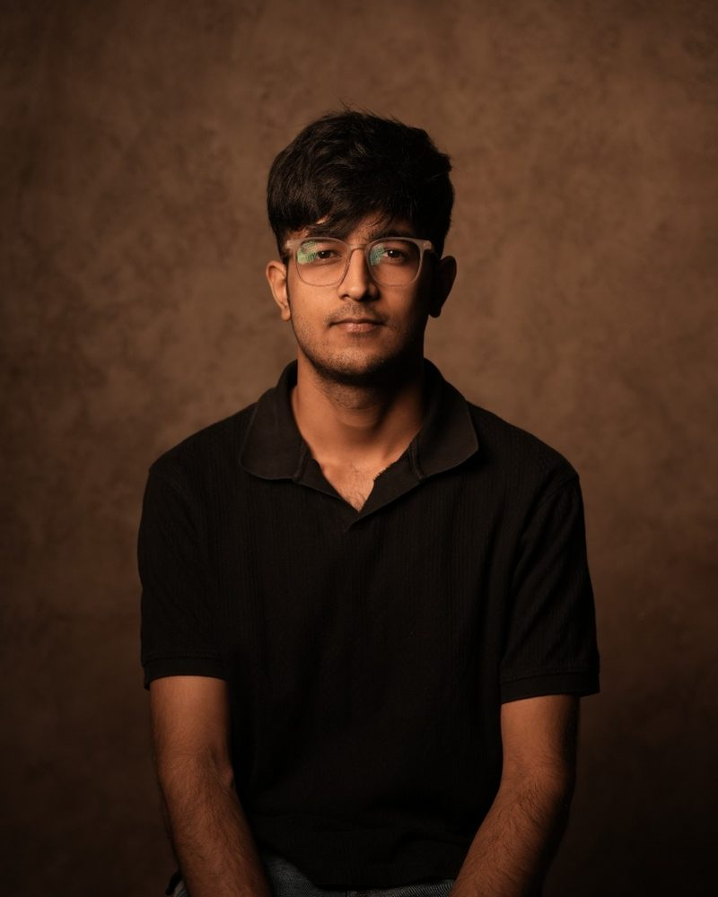

Climate
Carbon Project Tracker
Excel unit-economics model for biochar, rock weathering, agroforestry and regen ag (NPV, break-even price and MRV cost), a field KPI tracker with red, amber and green rules, and an auto-written executive memo.
I build software that takes real work off people’s plates, and I make sure it can be trusted.
Dual-degree student at BITS Pilani (B.E. Mechanical, M.Sc. Mathematics), currently in the founder’s office at a lighting design company, where a tool I built runs the studio’s quoting every day. I like problems that start messy: unstructured PDFs, websites that fight scrapers, decisions that need statistics.

Designed and built by Dev Malaiya. Back to top